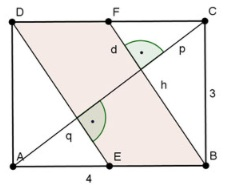

Pythagoras Aufgabe 86 Berechnen Sie die Größe der farbigen Fläche A in mm2.

Satz von Pythagoras im Dreieck ACD: AC2 = AD2 + DC2 AC2 = 32 mm2 + 42 mm2 = 25 mm2 |√ AC = 5 mm Kathetensatz im Dreieck FBC: BC2 = AC * p | :AC BC2 p = ----- AC 32 p = ---- 5 p = 1,8 mm q = 5 mm - 1,8 mm = 3,2 mm hParallelogramm = 5 mm - 2 * 1,8 mm = 1,4 mm Satz von Pythagoras im Dreieck BCH: BC2 = h2 + p2 |-p2 h2 = BC2 - p2 h2 = 32 mm2 - 1,82 mm2 = 5,76 mm2 |√ h = 2,4 mm Höhensatz im Dreieck FBC: p2 = h * d 1,82 = 2,4 * d |:2,4 d = 1,35 mm BE = h + d BE = 2,4 mm + 1,35 mm = 3,75 mm A = hParallelogramm * BE A = 1,4 mm * 3,75 mm = 5,25 mm2